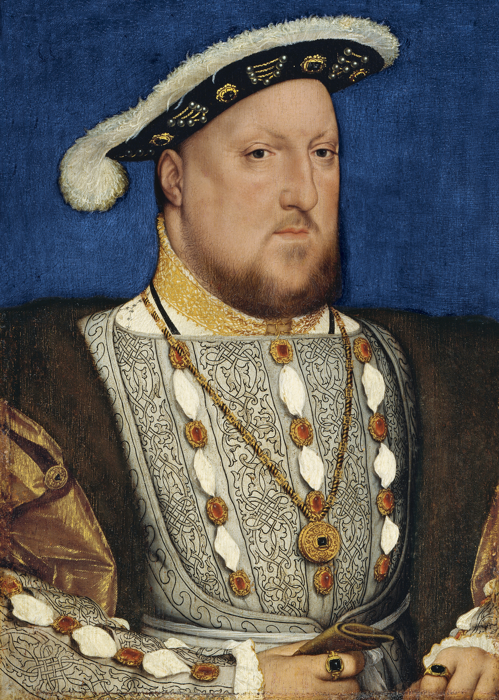

Re d'Inghilterra dal 1509, governò durante la Riforma protestante europea. Inizialmente cattolico, fu proclamato "Difensore della fede" per aver criticato Lutero.
Il rifiuto del Papa di annullare il matrimonio con Caterina d'Aragona lo spinse a rompere con Roma. Con l'Atto di Supremazia (1534) divenne capo della Chiesa anglicana.
La sua scelta aprì la strada alla Riforma inglese, generando tensioni religiose e politiche che durarono per secoli e cambiando per sempre l'identità spirituale dell'Inghilterra.